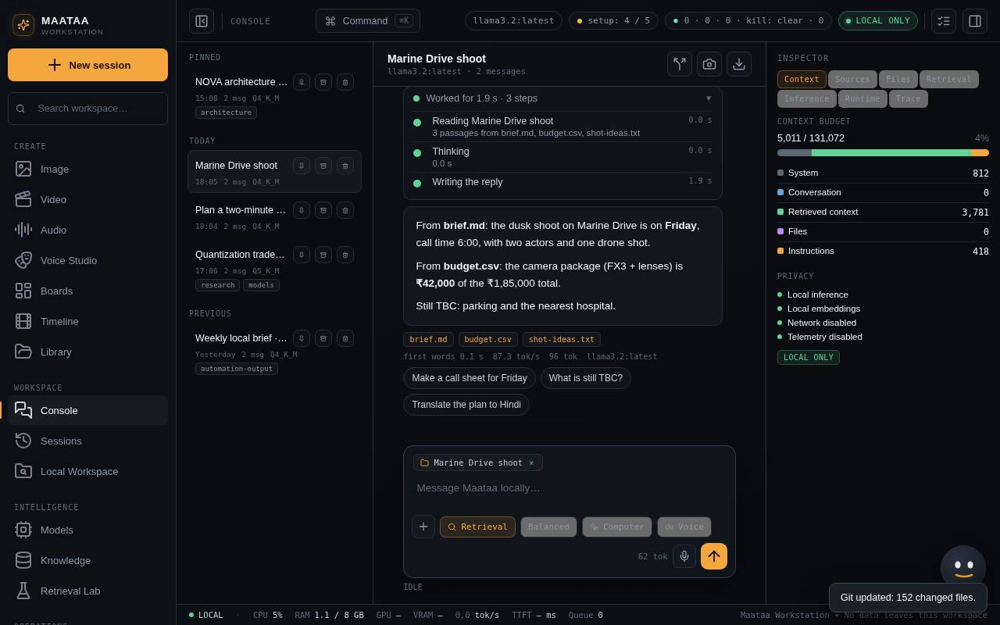
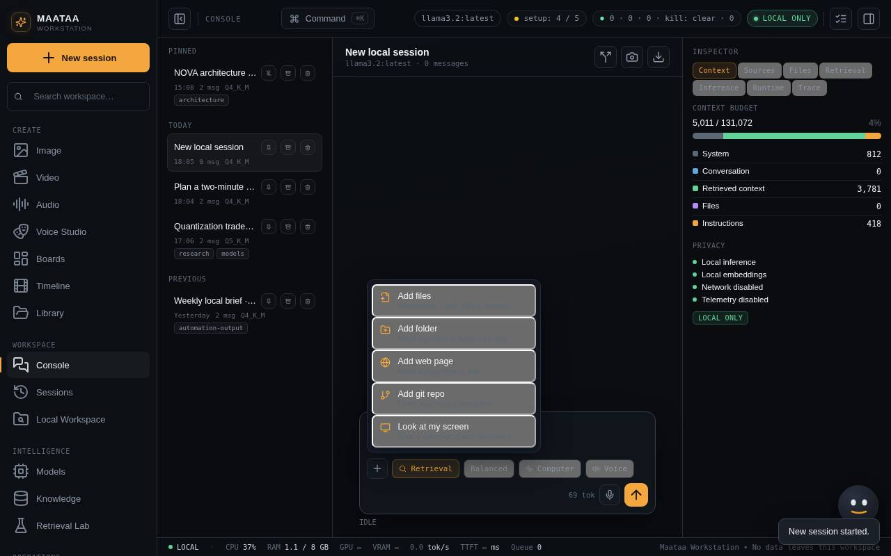
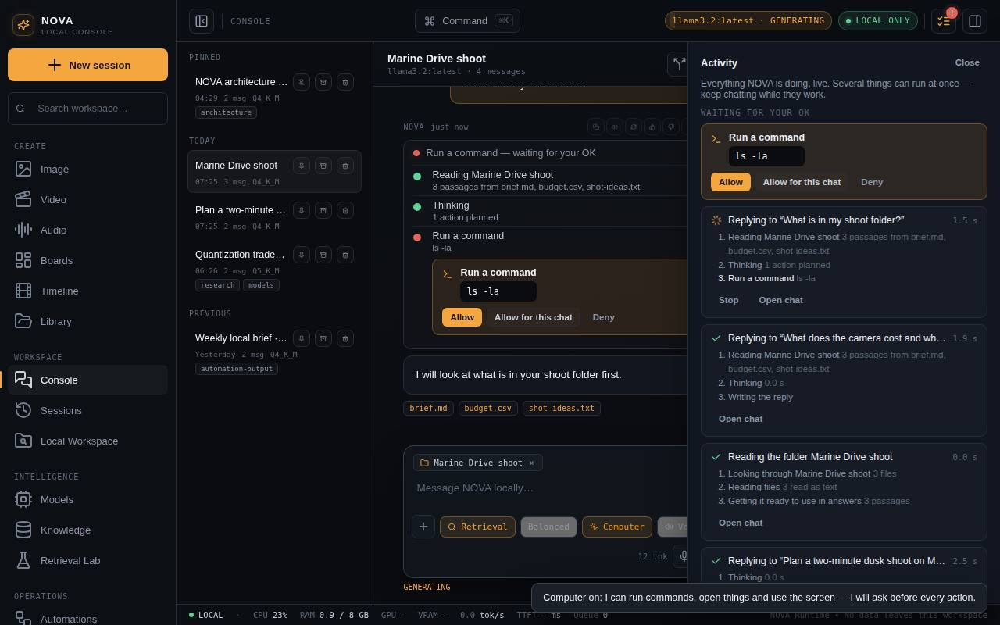
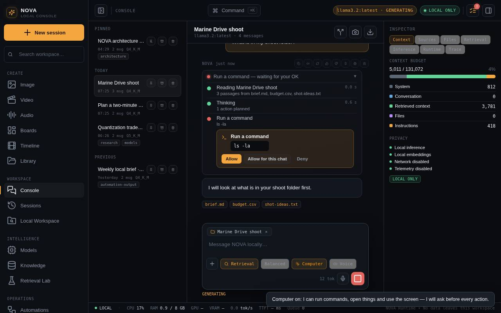
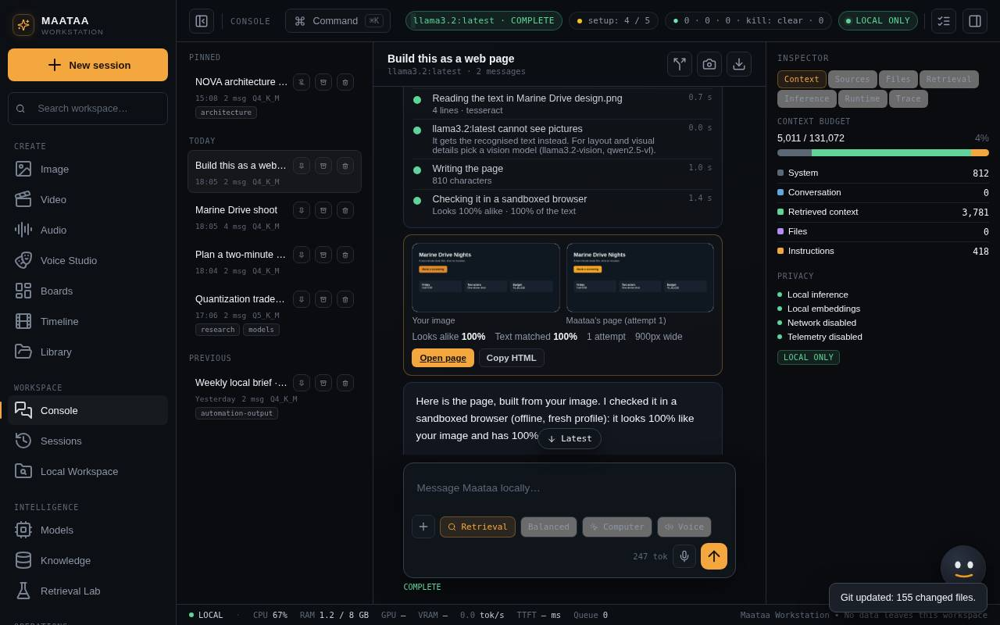

Add sources, live steps, computer and voice
Give Maataa a folder, files, a web page or a git repo to read, watch what it is doing step by step, let it use your Mac with your approval, and talk to it out loud.
Chat in Maataa works like talking to a colleague who can read what you hand them, show you what they are doing, and, when you allow it, use your computer.

Add something for Maataa to read
Press + under the message box:
| Choice | What Maataa does |
|---|---|
| Add files | Reads documents, code, CSV, PDF (needs pdftotext), Word, PowerPoint and Excel text. Images go to the model as pictures (needs a vision model). |
| Add folder | Reads the text files in a folder and its subfolders, skipping node_modules, .git, build folders and binary files. It never changes the folder. |
| Add web page | Fetches the page and keeps its readable text. Needs Settings > Allow network access. |
| Add git repo | Clones the latest commit (https://github.com/owner/repo, owner/repo, or the path of a repository on this Mac) and reads it, with its recent history. Remote repositories need network access. |
| Look at my screen | Turns on Computer and asks Maataa to take a screenshot and describe it. |
You can also drag files onto the conversation, or paste a link: Maataa offers to read the page or repository.
Ask "scan and report" (or review, audit, check) about an added folder or repository and Maataa also runs its read-only scan (code health, security signals, tests, documentation gaps, duplicate files and git changes) and writes the report from the findings, citing files. Nothing in the folder is changed.
Each thing you add appears as a chip above the message box. While it is being read the chip shows what is happening; when it is ready, ask about it. Maataa picks the passages that match your question and names the files it used under the answer. Remove a chip with ×. Inspector > Files lists what was read.

See what Maataa is doing
Above each reply, a steps panel shows every step as it happens: reading your sources, searching knowledge, thinking, each computer action and its result, writing the reply, with timings. When the reply is done it folds into one line ("Worked for 4 s · 5 steps"); click it to open it again.
The list icon in the top bar opens Activity: everything running across all chats, such as replies, folders being read and repositories being cloned. Several things can run at once. Stop any of them there. The badge shows how many are running, and turns red when Maataa is waiting for your OK.
You do not have to wait: type the next message while Maataa is answering and it is queued, then answered straight after.

Let Maataa use your computer
Turn on Computer under the message box. It is off in every new chat. Maataa can then:
- Run commands in a terminal, inside approved folders: folders you added to this chat and folders approved in Local Workspace.
- Open a web link, an app or a file, or show a file in Finder.
- See and control the screen: take a screenshot, click, type, press keys and scroll. Reading screenshots needs a vision model.
- Use the clipboard, and list, read, create, move and rename files in approved folders. It never deletes; Move to Trash goes through Finder, so you can put the file back.
If Maataa needs a folder that is not approved yet (for example your Desktop), it asks for it right in the chat: Allow this folder approves it and Maataa carries on. You can also type add folder ~/Desktop (or /folder Desktop, /url …, /git …) in the message box instead of using the + menu.
Before every action Maataa shows exactly what it wants to do and waits:
- Allow does it once.
- Allow for this chat allows that kind of action for the rest of the conversation.
- Deny tells Maataa not to, and it asks what you would prefer instead.
Some things are always refused: administrator (sudo) commands, erasing disks, deleting your home folder, shutting down, and downloading and running a script in one step.
While Maataa is halted with the kill switch in Workbench, it does not act on your computer at all. It says so in the chat, and you can still talk to it.

The model must support tools, for example qwen2.5, llama3.1 or mistral-nemo. If it does not, Maataa answers anyway and says why it could not act.
Settings > Computer can turn computer use off everywhere, turn off screen control, or let read-only actions (looking at files, the screen or the clipboard) run without asking. On macOS, clicking and typing need System Settings > Privacy & Security > Accessibility, and screenshots of other windows need Screen Recording. Allow Maataa Workstation, or Terminal when you use browser mode.
Evidence: what really ran
Under a reply that used the computer, Evidence chips list the actions that really ran, for example "Run a command: wc -l shots.txt". The colour shows the result: green for done, red for failed, grey for declined. Click a chip to see its execution contract in Local Workspace > Execution contracts.
When a reply says it ran a command or found files but no action ran, a red Not verified note appears. Any file names, sizes or output in that reply were written by the model, not observed on your Mac. This happens most with small models (for example llama3.2 3B), which often describe an action instead of doing it. For Computer use, pick a model of 7B or more that supports tools (for example qwen2.5), and check that Computer is on.
Talk and listen
- Hold the microphone while you speak and let go to send. Or click it once, speak, and click again. whisper.cpp turns your words into text on this Mac. Settings > Send right after I speak decides whether it sends straight away.
- Voice reads every reply aloud, using Kokoro voices when installed, else the macOS voice. The speaker on any reply reads just that one.
Edit, retry, react, pin
Hover a message for its buttons:
- Your message: ✏ edit it and resend (the later replies are replaced), or copy it.
- A reply: copy, read aloud, regenerate, 👍 / 👎, pin (pinned replies are listed under Inspector > Files), remember, or save to Knowledge.
- Follow-ups: after a reply Maataa suggests three short follow-ups; click one to send it.
Pictures: exact text, code and pages
When you add an image (with +, by dragging it in, or with Attach to chat in Media), Maataa first reads the text in it with text recognition on this Mac — Apple's built-in text recognition, or tesseract elsewhere — and gives the model the exact characters with the layout kept. That makes these reliable:
- "Extract the code from this screenshot" — the code comes back in a code block, indentation included. Even a model that cannot see pictures (such as llama3) gets the text.
- "What does this error say?", "Copy the table in this photo", "Translate this sign".
A vision model (llama3.2-vision, qwen2.5-vl, llava) also sees the picture, for layout, colours and anything that is not text.
Build a page from a picture. Attach a screenshot or design and ask, for example, "Build this as a web page" or "recreate this landing page in HTML". Maataa:
- Writes one self-contained HTML file (no external links, fonts or images).
- Opens it in a sandboxed browser — a throwaway profile with the network blocked — and takes a picture of it.
- Compares that picture with yours (layout and colour, and the text) and sends the differences back to the model to fix. Up to three attempts; the best one is kept.
The reply shows your image and Maataa's page side by side, how alike they are and how much of the text matched, with Open page, Copy HTML and, when a folder is added to the chat, Save to that folder. Built pages open in a sandbox that cannot reach Maataa or the internet. The check needs Google Chrome, Chromium, Edge or Brave installed; without one Maataa still writes the page but cannot check it.
In Media, an image's Actions menu has Copy text in image and Build a web page from it.

Memory
Say "remember that I shoot on an FX3" and Maataa saves it; "forget the FX3" removes it. The brain button on a reply saves a note from it. Maataa reads your notes at the start of every chat. See, add and delete them in Settings > Memory. Nothing is saved unless you ask.